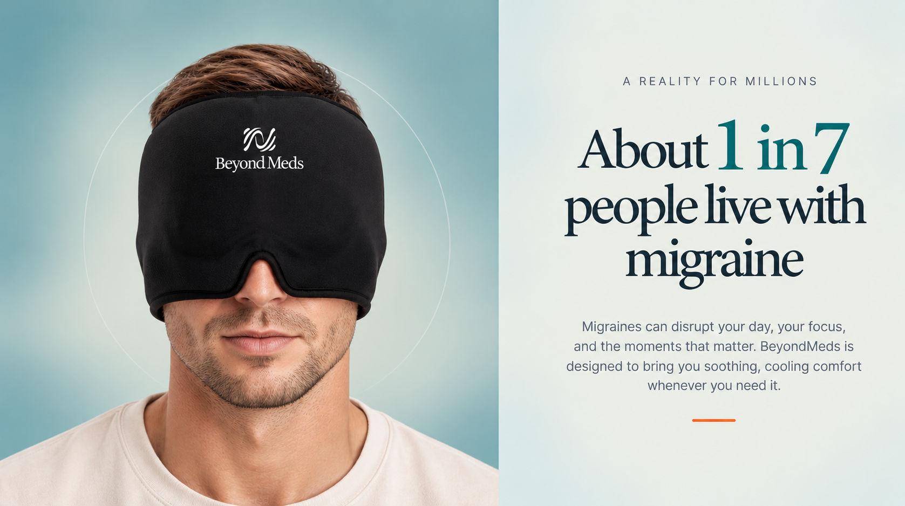
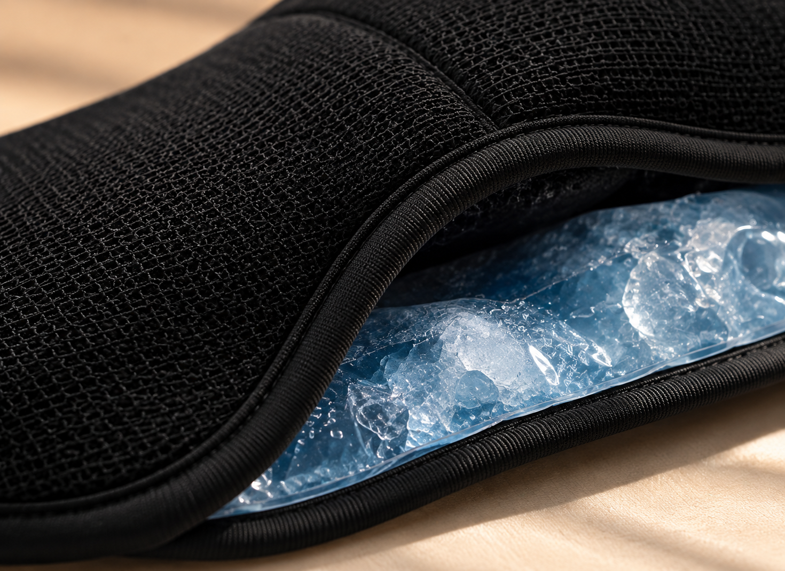
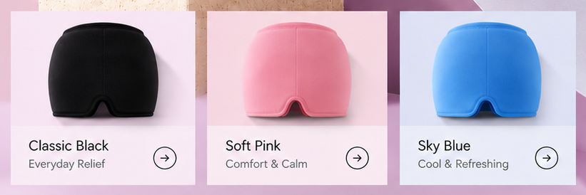

01 / YOUR MOMENT
Migraine discomfort
When the world feels too loud.
Soothing cooling contact and gentle compression, with coverage over the forehead, temples and eyes.
Find your comfortYour quiet corner. Your favourite place to rest.
One simple ritual to make the moment yours.

Migraines can disrupt your day, your focus, and the moments that matter. BeyondMeds is designed to bring you soothing, cooling comfort whenever you need it.
Source: The Migraine Trust ↗From a heavy head to tired eyes, explore the moments that call for a little comfort.
When the world feels too loud.
Soothing cooling contact and gentle compression, with coverage over the forehead, temples and eyes.
Find your comfortLet the day loosen its grip.
A soft, surrounding fit brings a comforting touch to the forehead and temples.
Find your comfortA gentler kind of headspace.
Choose a warm or cool feeling around your forehead and eye area, following the included care instructions.
Find your comfortPut the outside world on pause.
Find a comfortable place, soften the light, and settle into a few unhurried moments for yourself.
Find your comfortFor the morning after.
A cool, comfortable pause while you rest and take things slowly.
Find your comfortGive tired eyes a quiet moment.
Cooling contact around the eye area, for a refreshed feeling at the start or end of your day.
Find your comfort
Nylon and spandex create a smooth, stretchable fit that adapts to different head shapes and sizes.
Flexible gel provides contact around the forehead, temples and eye area for your hot or cold comfort ritual.
360-degree coverage and gentle compression wrap around your head, with a shaped nose cutout over the eyes.
Reusable by design. Follow the preparation, cleaning and storage instructions included with your cap.
Two ways to make a little space for yourself.
Cooling contact, for a quieter moment.
Cool or warm your cap according to the instructions supplied with it.
Check the temperature feels comfortable, then gently slip on your cap.
Settle somewhere comfortable. Make this moment yours.
Three colours. The same soft embrace.
Choose the one that feels like you.

REUSABLESoft, flexible fabric. Surrounding coverage. Soothing hot or cold contact. A simple addition to your everyday care.
Your colour. Your ritual. Your BeyondMeds.
A quieter evening. A softer start.
Explore the moments behind the ritual.
Choose a story, swipe, or use the arrows.
My favourite evening pause.
“I keep it ready for the end of a long day. The cool feel and soft fit make those few quiet minutes on the sofa something I really look forward to.”
Follow the preparation instructions supplied with the cap. Always check the temperature feels comfortable before wearing it.
A combination of flexible cooling gel and soft nylon-spandex fabric.
Yes. The cap covers the forehead, temples and eye area, with a shaped nose cutout.
Explore black, blue and pink in the product selector above.
Yes. Follow the included preparation, cleaning and storage instructions.